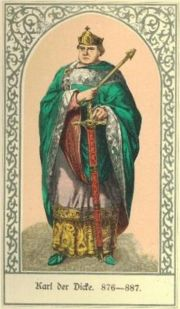
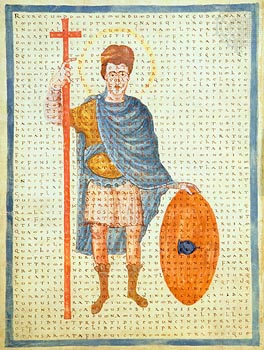

Monday, May the 21st, 2007
back to: title, date or indexes
An extract from Mrs Gubbins' so-called Mission Statement:
“We will seek new ways to enhance our readers' Hooting Yard experience. For example, we should strain mightily to harness the awesome power of the interweb to create what I think are known as multimedia formats. We should exploit different platforms and portals. The site will strive to be a critical hub for the Hooting Yard community. Now get on with it! You can make a start by bunging in a few pictures so that readers can visualise those Frankish kings mentioned in Annals Of The Frankish Kings, or at least some of them.”
Ever mindful that Mrs Gubbins has a matchless grasp of what really matters in this often perplexing world, we have taken her advice. Here, then, are three of those Frankish kings.
Pippin The Short

Charles The Fat

Louis The Pious